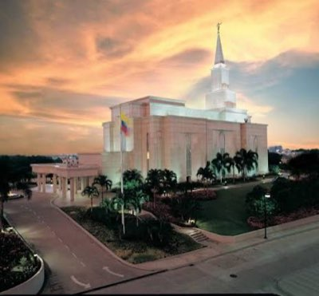
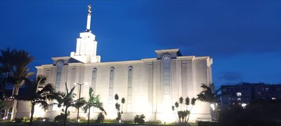
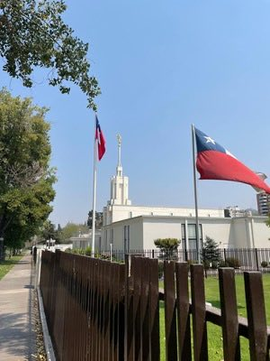
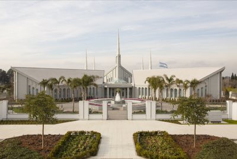
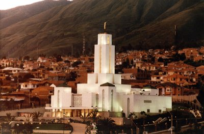
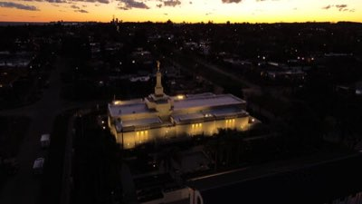

Temple Album
Home
Old
New
Large
Small
Temple Album

Guayaquil Ecuador Temple
Lima Peru Temple

Bogota Colombia Temple

Santiago Chile Temple

Buenos Aires Argentina Temple
Sao Paulo Brazil Temple

Cochabamba Bolivia Temple

Montevideo Uruguay Temple
Asuncion Paraguay Temple